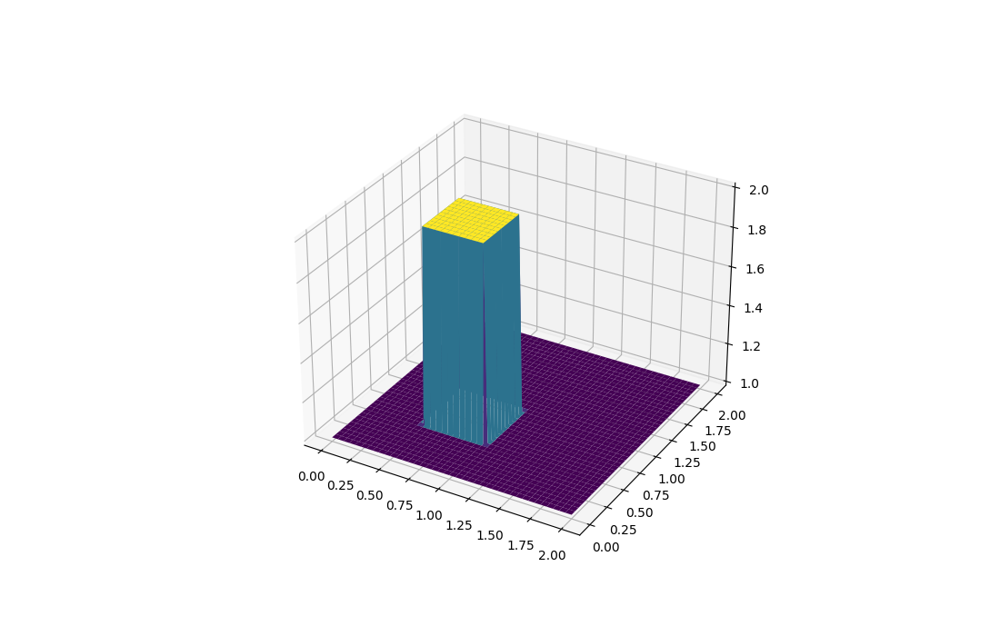

2 boyuta geçme zamanı geldi. 2D lineer taşınım akımını (convection) temsil eden parçalı kısmi diferansiyel denklem,
$$ \frac{\partial u}{\partial t} + c\frac{\partial u}{\partial x} + c\frac{\partial u}{\partial y} = 0 $$
Bu 1D lineer taşınım akımı ile neredeyse aynı formda, sadece şimdi tek yersel boyut yerine iki tane boyutumuz var, $x$ ve $y$.
Ayrıksal hale getirmek için aynı yaklaşımı kullanacağız, zaman adımlarını ileri farklar, konumsal değişkenleri ise geriye farklar yöntemi ile ayrıksal yapacağız. 1D durumda $i$ altsimgesini konumda olan hareketlilik için kullanmıştık, $u_{i}^n-u_{i-1}^n$ mesela. Şimdi, 2D durumda, ikinci bir altsimge $j$ ekliyoruz, $y$ boyutunu böylece indislemiş olacağız.
Tüm bunları kullanarak ayrıksal forma erişmek zor değil,
$$ \frac{u_{i,j}^{n+1}-u_{i,j}^n}{\Delta t} + c\frac{u_{i, j}^n-u_{i-1,j}^n}{\Delta x} + c\frac{u_{i,j}^n-u_{i,j-1}^n}{\Delta y}=0 $$
Daha önce olduğu gibi tek bilinmeyene göre tekrar düzenleyelim,
$$ u_{i,j}^{n+1} = u_{i,j}^n-c \frac{\Delta t}{\Delta x}(u_{i,j}^n-u_{i-1,j}^n) - c \frac{\Delta t}{\Delta y}(u_{i,j}^n-u_{i,j-1}^n) $$
Denklemi alttaki başlangıç şartlarına göre çözeceğiz,
$$ u(x,y) = \begin{cases} \begin{matrix} 2\ & 0.5 \leq x, y \leq 1 & \text{için} \cr 1\ & \text{diğer her yerde} \end{matrix}\end{cases} $$
Sınır şartları
$$ u = 1\ \text{değeri } \begin{cases} \begin{matrix} x = 0,\ 2 \cr y = 0,\ 2 \end{matrix}\end{cases} \text{ için } $$
from mpl_toolkits.mplot3d import Axes3D
from matplotlib import cm
nx = 81
ny = 81
nt = 100
c = 1
dx = 2 / (nx - 1)
dy = 2 / (ny - 1)
sigma = .2
dt = sigma * dx
x = np.linspace(0, 2, nx)
y = np.linspace(0, 2, ny)
u = np.ones((ny, nx)) ##create a 1xn vector of 1's
un = np.ones((ny, nx)) ##
u[int(.5 / dy):int(1 / dy + 1),int(.5 / dx):int(1 / dx + 1)] = 2
fig = plt.figure(figsize=(11, 7), dpi=100)
ax = fig.gca(projection='3d')
X, Y = np.meshgrid(x, y)
surf = ax.plot_surface(X, Y, u[:], cmap=cm.viridis)
plt.savefig('compscieng_app45cfd3_01.png')

İki boyutta zamanı ileri saralım şimdi. Tüm $i$ ve $j$'leri işleyebilmek için
bir içiçe geçmiş döngü gerekiyor bize. Python dilinde for kullanmak çok
optimal değildir, ama alttaki kod neler olduğunu gösterebilmek için yardımcı
olacaktır.
u = np.ones((ny, nx))
u[int(.5 / dy):int(1 / dy + 1), int(.5 / dx):int(1 / dx + 1)] = 2
for n in range(nt + 1):
un = u.copy()
row, col = u.shape
for j in range(1, row):
for i in range(1, col):
tmp1 = (c * dt / dx * (un[j, i] - un[j, i - 1]))
tmp2 = (c * dt / dy * (un[j, i] - un[j - 1, i]))
u[j, i] = (un[j, i] - tmp1 - tmp2)
u[0, :] = 1
u[-1, :] = 1
u[:, 0] = 1
u[:, -1] = 1
fig = plt.figure(figsize=(11, 7), dpi=100)
ax = fig.gca(projection='3d')
surf2 = ax.plot_surface(X, Y, u[:], cmap=cm.viridis)
plt.savefig('compscieng_app45cfd3_02.png')
Kaynaklar
[1] Barba, 12 steps to Navier–Stokes, Ders 1, https://nbviewer.jupyter.org/github/barbagroup/CFDPython/blob/master/lessons/01_Step_1.ipynb